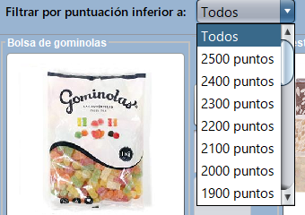

Catálogo de regalos
En este panel se encontrará el conjunto de regalos a los que se pueden optar inclyendo
además nuestra puntuación y las unidades que se van seleccionando de cada artículo de
forma instantánea e independiente. Además, también se podrá acceder a una vista más detallada
de cada artículo, así como al carrito de regalos que se han añadido hasta el momento:
Cada uno de los regalos estará contenido en una miniatura que permitirá añadir
o eliminar de forma rápida los artículos que se han ido incluyendo en nuestro carrito.
En caso de que se traten de artículos de viaje, se nos desplegará un diálogo adicional
para hacer una reserva personalizada.
Al pulsar en la imagen del artículo se podrá acceder a la vista detallada del artículo
en donde se podrá ver adicionalmente su descripción.
Las categorías que existirán para cada regalo serán:
- Alimentación
- Deportes
- Electrónica
- Juguetes
- Viajes: Este tipo de regalos solo podrán añadirse reservando una fecha con posibilidad de una observación
Además se tendrá la opción de filtrar los regalos por categoría:
Así como un filtro por puntuación inferior:

En el caso de las miniaturas se puede observar cómo algunos artículos a los que se tenía acceso
inicialmente ya no pueden ser añadidos hasta que se modifique el carrito y los puntos actuales
permitan seleccionar dicho regalo.
Para confirmar el pedido realizado se ha de pulsar en el botón de 'Confirmar' presente en la esquina inferior derecha
del panel del catálogo siempre que se permita. Existen dos tipos de mensajes que podrán ser mostrados:
- Puntuación restante sin canjear
- Confirmación del pedido